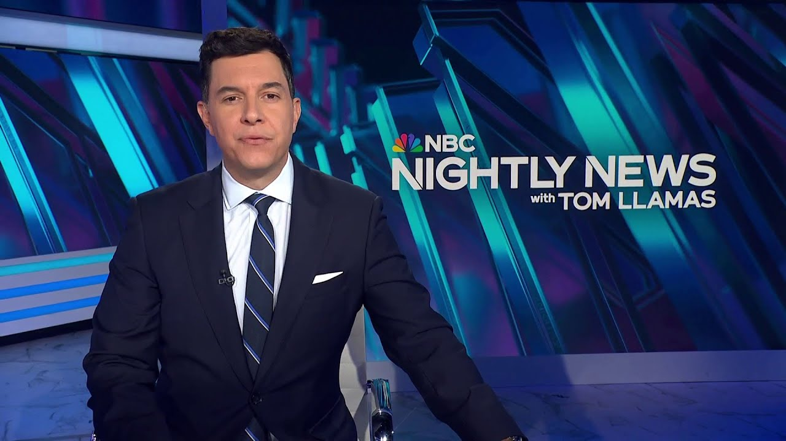

【NBC晚间新闻：B2轰炸机袭击伊朗后返航｜伊朗对特朗普总统的威胁｜北美时间2025-06-22】
Summary: Tonight's coverage includes the return of B2 bombers after striking Iran, threats from Iran to President Trump, and Operation Midnight Hammer. Satellite images reveal the aftermath of the attack, while tensions escalate in the Middle East.
摘要： 今晚节目报道了B2轰炸机袭击伊朗后返航、伊朗对特朗普总统的威胁以及“午夜铁锤”行动。卫星图像显示袭击后的场景，中东紧张局势升级。

⏱️ Estimated Reading Time: 32 min
📚 六级生词 📚 雅思生词 📚 托福生词 📚 专八生词 📚 SAT生词 📚 考研生词 📚 GRE生词 📚 高考生词
Tonight, the new video just in.
今晚，最新视频刚刚传来。
The B2 bombers that hit Iran landing back in the US and our new reporting.
袭击伊朗的B2轰炸机返回美国，我们带来最新报道。
How Iran threatened President Trump just before the strike.
伊朗如何在袭击前威胁特朗普总统。
Inside Operation Midnight Hammer.
揭秘“午夜铁锤”行动。
Our first look at those B2 bombers that flew the 36-hour mission.
我们首次看到执行36小时任务的B2轰炸机。
Plus, the decoy mission sent in to distract Iranian forces as American bombers dropped 14 30,000lb bombs.
此外，美国轰炸机投下14枚3万磅炸弹时，还派出诱饵任务分散伊朗军队注意力。
the president watching it all play out from the situation room.
总统在战情室观看全程。
Satellite images showing the scene after, including the holes made by those bunker buster bombs.
卫星图像显示轰炸后的场景，包括掩体炸弹炸出的深坑。
So, how much damage was done to Iran's nuclear program?
那么，伊朗核计划遭受了多大破坏？
And where is the Ayatollah tonight?
今晚，伊朗最高领袖身在何处？
The reported succession plan he just approved.
据报道，他刚刚批准的继任计划。
Plus, Iran's private warning to President Trump, threatening if the US hit Iran, they could activate sleeper cells in America as the Department of Homeland Security warns of a heightened threat environment.
此外，伊朗私下警告特朗普总统，威胁称若美国打击伊朗，可能激活在美潜伏人员，国土安全部警告威胁环境升级。
The UN meeting in an emergency session.
联合国召开紧急会议。
Iran blasting the Trump administration as Vice President Vance says the US is quote not at war with Iran, but is at war with Iran's nuclear program.
伊朗猛烈抨击特朗普政府，副总统万斯称美国“未与伊朗开战，而是针对伊朗核计划”。
Iran responding tonight, striking Israel again, injuring dozens in new raids.
伊朗今晚反击，再次袭击以色列，新空袭致数十人受伤。
Israel delivering some of its deepest attacks yet.
以色列发动迄今最深入打击。
Richard Angel on the ground in the middle of the spiraling regional conflict.
理查德·安杰身处不断升级的地区冲突现场。
American bases and embassies now on high alert.
美国基地和大使馆现处于高度戒备状态。
Also tonight, back here at home, parishioners running for their lives.
今晚国内消息，教堂信徒逃命。
The terrifying moment a man started shooting at a Michigan church.
密歇根州教堂发生枪击的恐怖瞬间。
A hero security guard taking out the gunman.
英勇保安击毙枪手。
The stunning video of a helicopter trying to land when suddenly the pilot loses control next to an outdoor restaurant.
直升机试图降落时突然失控的惊人视频，事发露天餐厅旁。
What went wrong?
发生了什么？
Nightly News starts right now.
《夜间新闻》现在开始。
This is NBC Nightly News with Tom Yamz.
这里是汤姆·亚马兹主持的NBC《夜间新闻》。
And good evening and welcome to this special edition of Nightly News.
晚上好，欢迎收看本期《夜间新闻》特别节目。
America bracing for retaliation after those US strikes on three Iranian nuclear sites.
美国空袭伊朗三处核设施后，准备应对报复。
This new video showing our B2 bombers returning to Whiteitman Air Force Base in Missouri after that historic 36-hour round trip.
新视频显示B2轰炸机完成历史性36小时往返任务后返回密苏里州怀特曼空军基地。
Massive crowds, you see them here, gathering today in Tran, condemning the move as Israel again strikes Iran.
大批人群今日在德黑兰集会谴责此举，以色列再次袭击伊朗。
Military officials sharing flight paths and a detailed timeline of Operation Midnight Hammer.
军方官员分享“午夜铁锤”行动飞行路线和详细时间表。
You can see before and after images of those strikes and the three deep holes shown here.
可看到袭击前后对比图像及三个深坑。
The spots where the bombs hit, including impact to that key Ford nuclear site deep inside of a mountain.
炸弹命中点包括山体深处的关键福尔多核设施。
The US military using 30,000 lb bunker buster bombs to try and penetrate it.
美军使用3万磅掩体炸弹试图穿透目标。
The Pentagon saying, quote, "All three sites sustained extremely severe damage and destruction."
五角大楼称：“三处目标均遭受极其严重的破坏。”
And now NBC News has learned Iran sent a message to President Trump directly, warning if he took military action, Iran could respond by unleashing terrorist attacks.
NBC新闻获悉，伊朗直接向特朗普总统传信，警告若采取军事行动，伊朗可能发动恐怖袭击报复。
Our team tonight spread from Washington to the Middle East.
今晚我们的团队遍布华盛顿至中东。
We want to start with Peter Alexander at the White House because Peter, I know you have that new reporting just in that Iran directly threatened America.
首先连线白宫的彼得·亚历山大，彼得，据悉伊朗直接威胁美国。
Tom, tonight NBC News has learned that message from Iran was conveyed to President Trump by an intermediary during last week's G7 summit, warning the president if he launched air strikes against Iran's nuclear facilities, Iran could respond by unleashing terrorist attacks on the US by activating sleeper cells it has inside this country.
汤姆，NBC新闻获悉伊朗信息由中间人在上周G7峰会期间传达给特朗普总统，警告若空袭伊朗核设施，伊朗可能激活在美潜伏人员发动恐袭。
According to two US officials, all as we learn new details about those historic strikes.
据两名美国官员透露，同时我们获知历史性空袭新细节。
Tonight, the new video.
今晚最新视频。
B2 bombers returning to their Missouri base after those secretive strikes.
B2轰炸机执行秘密空袭后返回密苏里州基地。
And now, our first look at the targets they hit inside Iran.
现在我们首次看到伊朗境内被袭目标。
These before and after images show the massive impact of the US attack on Isvahan, one of three Iranian nuclear facilities hit.
伊斯法罕核设施遭袭前后对比图像显示巨大破坏，该地是三个被袭核设施之一。
Initial battle damage assessments indicate that all three sites sustained extremely severe damage and destruction.
初步战损评估显示三处目标均遭极其严重破坏。
The commander-in-chief with this declaration overnight.
总司令昨夜发表声明。
I can report to the world that the strikes were a spectacular military success.
我向世界宣布此次空袭取得辉煌军事胜利。
Iran's key nuclear enrichment facilities have been completely and totally obliterated.
伊朗关键核浓缩设施已被彻底摧毁。
Pentagon officials say it's too soon to tell.
五角大楼官员称判断为时尚早。
But tonight, the US is also preparing for potential Iranian retaliation, though the Trump administration emphasizes the attack was intended as a limited one-time strike.
但今晚美国也准备应对伊朗潜在报复，尽管特朗普政府强调此次为有限一次性打击。
We're not at war with Iran.
我们未与伊朗开战。
We're at war with Iran's nuclear program.
我们针对伊朗核计划。
President Trump inside the situation room with Vice President Vance, his secretaries of state and defense, as well as Chief of Staff Susie Wilds, and Joint Chiefs Chairman Dan Kaine.
特朗普总统在战情室与副总统万斯、国务卿、防长、幕僚长苏茜·威尔兹及参联会主席丹·凯恩一起。
The president issuing this warning to the Iranian regime.
总统向伊朗政权发出警告。
Iran, the bully of the Middle East, must now make peace.
伊朗这个中东恶霸现在必须求和。
If they do not, future attacks will be far greater and a lot easier.
否则未来打击将更猛烈且更轻松。
For 40 years, Iran has been saying death to America, death to Israel.
40年来伊朗一直叫嚣“美国去死，以色列去死”。
They have been killing our people.
他们杀害我们的人民。
I decided a long time ago that I would not let this happen.
我早已决定不容此事发生。
The historic US military operation complex and choreographed.
此次历史性美军行动复杂且精心策划。
The nuclear sites targeted Natans, Isvahan, and Fordo buried deep beneath an Iranian mountain.
核设施目标包括纳坦兹、伊斯法罕及深埋山体的福尔多。
The US adding the element of surprise with the president giving the final green light 48 hours after announcing he would take up to two weeks to decide whether to strike.
美国增加突袭元素，总统宣布需两周决定是否打击后48小时即下达最终命令。
Just a time to see whether or not people come to their senses.
只是给人们时间醒悟。
First, the apparent decoys on Saturday morning.
周六早晨先派出明显诱饵。
B2 stealth bombers launching from Missouri flying west hours before the B2s used in the actual strikes headed east.
执行真实打击的B2向东飞行前数小时，密苏里州起飞的B2隐形轰炸机向西飞行。
The US deploying 14 30,000lb bunker busting bombs for the first time in a military operation.
美军首次在军事行动中部署14枚3万磅掩体炸弹。
In this satellite image of Fordo, if you zoom in, you can see several holes from the bunker busting bombs which explode underground.
福尔多卫星图像放大后可看到掩体炸弹炸出的多个地下爆炸坑。
The B2s also dropping them on natons.
B2还向纳坦兹投弹。
They dropped 30,000lb bombs on a target the size of a of a washing machine.
他们向洗衣机大小的目标投下3万磅炸弹。
US submarines firing Tomahawk missiles to hit the Isvahan site.
美军潜艇发射战斧导弹打击伊斯法罕目标。
In all, 125 US war plananes and 75 precisiong guided munitions used.
共出动125架美军战机和75枚精确制导弹药。
And the Pentagon says Iran never fired a single shot.
五角大楼称伊朗未发一弹。
This operation underscores the unmatched capabilities and global reach of the United States military.
此次行动彰显美军无与伦比的能力和全球影响力。
Defense Secretary Pete Hegath pinning the praise on President Trump.
防长皮特·赫加特将赞誉归于特朗普总统。
Many presidents have dreamed of delivering the final blow to Iran's nuclear program and none could until President Trump.
多位总统梦想对伊朗核计划给予致命打击，唯特朗普总统实现。
And after director of national intelligence Tulsi Gabbard in March said Iran had an unprecedented amount of enriched uranium for a non-nuclear state, but that the Ayatollah had not ordered the development of a nuclear weapon.
国家情报总监图尔西·加巴德三月称伊朗作为无核国家拥有空前量浓缩铀，但最高领袖未下令开发核武器。
Secretary of State Marco Rubio argued the Iranian threat was urgent.
国务卿马可·鲁比奥称伊朗威胁紧迫。
It doesn't matter if the order was given.
是否下过命令不重要。
They have everything they need to build nuclear weapons.
他们已具备造核武的一切条件。
Peter Alexander, NBC News, the White House.
NBC新闻彼得·亚历山大，白宫报道。
Now to the stealth operation.
现在关注秘密行动。
Tonight, we take you inside the war plananes and submarines that fired on Iran's nuclear facilities.
今晚带您了解空袭伊朗核设施的战机和潜艇。
The largest B2 strike in US history.
美国史上最大规模B2打击行动。
NBC's Courtney QBY with the plan of attack tonight.
NBC新闻考特尼·库比带来今晚攻击计划。
Tonight, new details about Operation Midnight Hammer.
今晚“午夜铁锤”行动新细节。
Just after midnight Saturday morning, a group of US Air Force Stealth B2 bombers took off from Whiteitman Air Force Base under the cover of darkness.
周六凌晨刚过，一批美军B2隐形轰炸机趁夜色从怀特曼空军基地起飞。
Defense officials said they were headed to Guam, but seven of the bombers quietly flew in the opposite direction.
防务官员称其飞往关岛，但其中七架秘密反向飞行。
Part of the package proceeded to the west and into the Pacific as a decoy, a deception effort uh known only to an extremely small number of planners and key leaders.
部分编队向西进入太平洋作为诱饵，该欺骗行动仅极少数策划者和关键领导知晓。
Flying in near silence to avoid detection, the bombers, each with two crew members and loaded with two 30,000 lb bombs each, began their 36-hour roundtrip flight, made possible by dozens of tankers refueling them in the air along the way.
轰炸机近乎静默飞行避免侦测，每架载两名机组和两枚3万磅炸弹，开始36小时往返飞行，沿途数十架加油机空中加油保障任务。
At 5:00 p. p.m. Saturday night, a large group of fighter jets joined the bombers as they approached Iranian airspace.
周六晚5点，大批战斗机加入轰炸机编队接近伊朗领空。
At the same time, a US Navy submarine launched 30 Tomahawk missiles towards Iran.
同时美军潜艇向伊朗发射30枚战斧导弹。
Less than 1 hour later, the bombers entered Iranian airspace and some of the jets sped ahead, targeting any Iranian air defenses that could threaten the B2s and ready to take on any Iranian jets that scrambled in their path.
不足一小时后轰炸机进入伊朗领空，部分战机加速前出压制可能威胁B2的伊朗防空系统，准备拦截任何升空伊朗战机。
At 6:40 p.m., the US began striking three locations, dropping 14 massive ordinance penetrators known as bunker busters on Fordo and Natans just as Tomahawk missiles crashed down on a third site at Isvahan.
6点40分美军开始打击三处目标，向福尔多和纳坦兹投下14枚巨型钻地弹（掩体炸弹），同时战斧导弹击中伊斯法罕第三目标。
By 7:30 p.m., all of the aircraft were safely out of Iranian airspace.
7点30分所有飞机安全离开伊朗领空。
According to the Pentagon, Iran never fired a shot at the US aircraft.
五角大楼称伊朗未向美军飞机开火。
Iran's fighters did not fly and it appears that Iran's surfaceto-air missile systems did not see us.
伊朗战机未升空，其防空系统似乎未发现我们。
Throughout the mission, we retained the element of surprise.
整个行动保持突袭优势。
The B2 bomber, the only aircraft in the world that can deploy the massive bomb.
B2轰炸机是全球唯一能投放该巨型炸弹的飞机。
This marked the largest B2 strike in history.
此次为史上最大规模B2打击。
A historic mission cloaked in secrecy.
载入史册的秘密任务。
Courtney QB joins us live from the Pentagon.
考特尼·库比五角大楼现场连线。
And Courtney, this is the first time these types of bunker busters were used in combat.
考特尼，此类掩体炸弹首次用于实战。
What else can you tell our viewers about them?
还有何信息分享？
Yeah, that's right, Tom.
是的汤姆。
These 30,000lb bombs are uniquely suited to target underground facility facilities like the one at Fordo.
这些3万磅炸弹专为福尔多等地下设施设计。
They're equipped with GPS trackers and they're extremely strong casing allows them to punch through reinforced concrete and drill down up to 200 feet.
配备GPS追踪器，超强外壳可穿透钢筋混凝土并钻地200英尺。
You can see three of the holes that they made there in that picture before they even detonate.
图中可见三处炸弹未爆前钻出的孔洞。
Tom, Courtney QBY for us tonight.
汤姆，考特尼·库比报道。
Courtney, we thank you.
考特尼，感谢。
Now to the reaction in the Middle East.
现在关注中东反应。
President Trump's decision to strike Iran's nuclear sites.
特朗普总统打击伊朗核设施决定。
Praising Israel, but sparking anger inside of Iran, which is already retaliating.
受以色列赞扬，但引发伊朗愤怒，伊方已展开报复。
Here's Richard Angel.
理查德·安杰报道。
Just hours after those US air strikes on its nuclear facilities, Iran fired dozens of ballistic missiles at residential areas of Tel Aviv, hitting this apartment building, causing significant damage, although few injuries.
美军空袭核设施数小时后，伊朗向特拉维夫居民区发射数十枚弹道导弹，击中这栋公寓造成重大破坏但伤亡较少。
people here warned to go to bomb shelters.
当地民众被警告进入防空洞。
So, we've just moved into our own safe room in the place where we're staying.
我们刚躲入驻地安全屋。
You can still hear the air raid sirens and there have been some very loud impacts close by.
仍能听到空袭警报，附近有剧烈爆炸声。
Israel kept up its attacks inside Iran, taking out more missile launchers.
以色列持续打击伊朗境内目标，摧毁更多导弹发射器。
Israel's prime minister, who has been pushing the US to join an attack on Iran's nuclear sites for decades, today congratulating President Trump.
以色列总理数十年来推动美国打击伊朗核设施，今日祝贺特朗普总统。
History will record that President Trump acted to deny the world's most dangerous regime the world's most dangerous weapons.
历史将铭记特朗普总统阻止最危险政权获取最危险武器。
Many in Israel appeared to agree.
以色列许多人似乎表示认同。
I want to thank President Trump because this could be the end of the war.
我要感谢特朗普总统，因为这可能是战争的结束。
In Iran, there was anger in the streets.
伊朗街头爆发愤怒情绪。
Iran's foreign minister today saying his country was in the midst of negotiations as the American bombs dropped.
伊朗外长今日表示，该国正处于谈判中，而美国炸弹却落下。
There is no red line that they have not crossed.
他们已越过所有红线。
And the last one and the most dangerous one was happened only last night.
而最近且最危险的一次就发生在昨夜。
But will Iran attack the US directly?
但伊朗会直接攻击美国吗？
Its missiles and fighter jets don't have the range to reach the United States.
其导弹和战斗机射程不足以抵达美国本土。
But American troops and bases in the Middle East could be targeted.
但美军在中东的部队和基地可能成为目标。
Iran's parliament voted to close the Strait of Hormuz, a potential economic attack.
伊朗议会投票决定封锁霍尔木兹海峡，这可能是经济打击手段。
20% of the world's oil flows through the strait, but no action.
全球20%的石油经此海峡运输，但尚未采取行动。
Parliament saying the move would have to be approved by Iran's Supreme Leader.
议会称该行动需得到伊朗最高领袖批准。
The New York Times reports citing three Iranian officials.
《纽约时报》援引三名伊朗官员的报道称。
Ayatollah Ali Hami is now in a bunker and has picked replacements in case he's killed.
阿亚图拉·阿里·哈米现身处地堡，并已指定继任者以防不测。
Across the Middle East, the response from Arab countries was largely silent.
整个中东地区，阿拉伯国家大多保持沉默。
Many calls for talks.
多方呼吁对话。
No government offering to fight for Iran.
无政府表态愿为伊朗而战。
The only people in the world that are unhappy about what happened in Iran last night is the regime in Iran.
全球唯一对伊朗昨夜事件不满的只有伊朗政权自身。
And Richard, I know you have some new reporting tonight about the potential Iranian threat there in the Middle East.
理查德，我知道你今晚有关于伊朗在中东潜在威胁的新报道。
So, two US officials, Tom, tell us that the next 48 hours are of particular concern.
两位美国官员透露，未来48小时尤为关键。
But in terms of Iran's ability to respond, Iran is a shadow of its former self.
但就伊朗的报复能力而言，其实力已大不如前。
It has lost most of its network of militias and its biggest one, Hezbollah, today also didn't fire a shot.
其民兵网络大多瓦解，最大盟友真主党今日也未开火。
Tom, Richard Angel for us from Tel Aviv.
汤姆，理查德·安杰在特拉维夫报道。
With the tensions escalating there in the Middle East, officials are issuing warnings of possible retalatory attacks right here at home.
随着中东紧张升级，官员警告国内可能遭遇报复性袭击。
Tom Winter joins me tonight.
汤姆·温特今晚加入我们。
And Tom, we just got a new warning in from the State Department.
汤姆，我们刚收到国务院新警告。
What's it saying?
内容是什么？
Right. Just as we're coming on the air, the State Department warning all US citizens abroad about potential threats, acknowledging the situation in Iran and the Middle East.
就在节目开播时，国务院警告所有海外美国公民注意潜在威胁，承认伊朗和中东局势。
Here at home, it's kind of a twoprong threat, the physical and the cyber.
国内面临双重威胁：实体与网络攻击。
And tonight, law enforcement agencies in multiple cities have stepped up their presence in sensitive sites like houses of worship, cultural centers, and diplomatic sites.
今晚多座城市执法部门已加强敏感场所安保，包括宗教场所、文化中心及外交机构。
The goal is to stop someone who is angered by the war in the Middle East, from conducting an attack here.
旨在阻止因中东战事愤怒者在国内发动袭击。
They're also looking for cyber attacks, which could temporarily take a website offline or deface a site.
同时防范网络攻击，如暂时瘫痪或篡改网站。
And then there's the concern about people backed by Iran who could already be here.
还担忧伊朗支持的潜伏人员可能已在国内。
A sleeper cell.
即休眠小组。
Well, in the last several years, law enforcement has charged multiple people in a range of plots tied to Iran.
过去几年，执法部门起诉了多起涉伊朗阴谋的相关人员。
From an attempted assassination on then President-elect Trump to a potential attack against an Iranian activist and journalist here in New York City.
从针对当选总统特朗普的未遂刺杀，到纽约市伊朗活动家与记者的潜在袭击。
It's all on law enforcement's radar, Tom.
这些都在执法部门监控中。
All right, we thank you for that, Tom.
好的，感谢报道。
Uh, we want to turn out to the political reactions.
现在关注政治反应。
Demonstrators taking to the streets today as the president takes on a Republican who slammed the attack on Iran.
示威者今日上街抗议，总统则回击批评伊朗行动的共和党人。
Senior Washington correspondent Hi Jackson has this one.
高级驻华盛顿记者杰克逊带来报道。
Iran is a sovereign state.
伊朗是主权国家。
Demonstrations tonight from DC [Applause] to Atlanta to New York.
今夜示威从华盛顿[掌声]蔓延至亚特兰大和纽约。
This was unquestionably an act of aggression and war.
这无疑是侵略和战争行为。
It's totally unacceptable.
完全不可接受。
Frustration there and fallout in Washington for President Trump as some inside the president's own party sound a warning, including one-time top adviser Steve Bannon.
愤怒情绪蔓延，华盛顿对特朗普的反弹加剧，党内人士发出警告，包括前高级顾问史蒂夫·班农。
An overwhelming majority of the people don't want to get involved in any of this.
绝大多数民众不愿卷入此事。
Now we're involved.
如今我们深陷其中。
Kucky's Thomas Massie, the rare Republican lawmaker criticizing the president's move.
肯塔基州议员托马斯·马西罕见批评总统决定。
We are exhausted.
我们已精疲力竭。
We are tired from all of these wars and we're non-interventionists.
厌倦了所有这些战争，我们是非干预主义者。
What he promised us was we would put America first.
他承诺过美国优先。
President Trump late today hitting back, writing, MAGA should drop this pathetic loser Tom Massie like the plague with his allies now launching a campaign to try to unseat Massie in a primary.
特朗普今日晚些时候反击，发帖称"让美国再次伟大"阵营应像避瘟疫般抛弃可悲的失败者马西，其盟友已发起初选罢免行动。
For years, President Trump said he would keep the US out of wars, even as he also pledged to prevent Iran from becoming a nuclear power.
多年来特朗普承诺让美国远离战争，同时誓言阻止伊朗拥核。
They said, "He will start a war.
他们曾说"他将发动战争。
I'm not going to start a war.
我不会发动战争。
I'm going to stop wars.
我将终结战争。
I will prevent World War II."
我会阻止第三次世界大战。"
My proudest legacy will be that of a peacemaker and unifier.
我最自豪的遗产将是和平缔造者与团结者。
Now, his vice president on Meet the Press defending the decision to enter into Israel's war with Iran.
如今副总统在《会见媒体》为介入以伊战争的决定辩护。
I certainly empathize with Americans who are exhausted after 25 years of foreign entanglements in the Middle East.
我理解民众对中东25年外交泥潭的厌倦。
I understand the concern.
我明白这种担忧。
But the difference is that back then we had dumb presidents and now we have a president who actually knows how to accomplish America's national security objectives.
但区别在于过去是愚蠢的总统，而现任总统真正懂得如何实现国家安全目标。
Many Democrats deeply critical with Congresswoman Alexandria Okasio Cortez calling the strike a disastrous decision, unconstitutional and clearly grounds for impeachment.
众多民主党人强烈批评，议员奥卡西奥-科尔特兹称空袭是灾难性决定、违宪且构成弹劾理由。
Other Democrats questioning the justification for and the effectiveness of the operation itself.
其他民主党人质疑行动正当性与实效性。
As far as we know, the Iranians were not in the process of developing a weapon.
据我们所知，伊朗当时并未研发武器。
They were enriching uranium.
他们只是在浓缩铀。
It was clear what they had.
其核材料储量明确。
My my big fear right now is that they take this entire program underground.
我最担心的是他们将整个计划转入地下。
As for that Kentucky Congressman Thomas Massie, his concern over the strike is not the only reason he's finding himself a target of the presidents.
肯塔基州议员马西因质疑空袭成为总统目标，但这并非唯一原因。
He's also only one of two Republicans who voted against that so-called big beautiful bill.
他还是仅有的两名反对"宏伟法案"的共和党人之一。
Tom Hi Jackson for us.
汤姆·杰克逊报道。
Hie, thank you.
谢谢。
When we return, the terrifying situation at a Michigan church.
稍后关注密歇根州教堂恐怖事件。
Worshippers scramble as an active shooter opened fire outside of the church.
枪手在教堂外开火，信徒惊慌逃生。
How a security guard took him down.
安保人员如何将其制服。
That's next.
接下来报道。
We are back now with a terrifying encounter for some churchgoers in Michigan.
现在回到密歇根州教堂信徒的恐怖遭遇。
An alleged gunman opening fire outside of Sunday service.
一名枪手在主日礼拜外开火。
Adrian brought us now on how church staff prevented a mass shooting.
阿德里安将报道教堂人员如何阻止大规模枪击。
Do that and so did our games.
我们游戏环节也将呈现。
But that doesn't mean that we didn't have terrifying moments as shots rang out at a church in Wayne, Michigan.
但韦恩县教堂枪声响起时仍充满恐怖时刻。
Captured on a live stream, family seen running for safety after police say a 31-year-old man started shooting outside.
直播画面显示，警方称31岁男子在外开枪后，家庭四散奔逃。
Everybody come to the back.
所有人到后面来。
Desperate parents grabbing their frightened children.
绝望父母抓住受惊的孩子。
Come on.
快点。
Come on.
快点。
Come on.
快点。
Parishioners ducking as they tried to escape.
信徒们弯腰试图逃离。
The getting guns out of his car and going into the church.
枪手从车内取枪走向教堂。
It happened after 11:00 a.m. at the Cross Point Community Church just outside of Detroit.
事件发生于底特律郊外十字点社区教堂上午11点后。
The suspect exit exited his vehicle wearing a tactical vest armed with a long gun and a handgun.
嫌疑人穿战术背心，持长枪和手枪下车。
He approached the church building and began firing his weapon.
他接近教堂建筑并开火。
According to authorities, a parishioner at the church hit the gunman with his vehicle.
据当局称，一名信徒用车撞击枪手。
At least two staff members shot and killed the suspect outside of the building.
至少两名工作人员在建筑外击毙嫌疑人。
His motivations are unknown, but at this point it appears he was suffering from a mental health crisis.
动机未明，但现阶段显示其处于心理健康危机。
I started hearing Wendy Bowden says she hid in a bathroom.
温迪·鲍登称自己躲进洗手间时听到枪声。
We were just praying and we didn't know what was going on, but we knew it was bad and hearing all the gunshots.
我们正在祈祷，虽不知发生什么，但知道情况糟糕，枪声不断。
Moments before the gunfire, children seen walking down the center aisle as fear erupted across the church.
枪响前片刻，孩子们正沿中央过道行走，恐惧瞬间席卷教堂。
Tonight, the FBI assisting on scene as the investigation continues.
今夜FBI协助现场调查。
This congregation grateful.
会众心存感激。
I just want to hug my mom and take her home, make sure that she's safe.
我只想拥抱母亲带她回家，确保她安全。
Adrienne Bronis, NBC News.
NBC新闻阿德里安·布朗尼斯报道。
And still ahead tonight, the scary moment outside this restaurant when a helicopter crash landed right outside.
接下来关注餐厅外直升机坠毁惊魂时刻。
We'll show you that video next.
稍后播放视频。
We are back now with an urgent search and rescue in California.
现在回到加州紧急搜救。
The Coast Guard saying six people have died, two were hospitalized and two more are missing after this boat capsized in Lake Tahoe.
海岸警卫队称太浩湖船只倾覆致6死2伤2失踪。
It apparently capsized in brutal conditions.
船只显然在恶劣条件下倾覆。
39 knot winds you see there and waves 6 to 8 ft high.
风速39节，浪高6至8英尺。
Also tonight, severe weather across the country.
今晚全国多地恶劣天气。
Look at this.
请看画面。
This is the scene in Utah this weekend.
犹他州本周末场景。
Smoke rising from the Foresight fire burning more than 1,600 acres already.
"远见"山火浓烟滚滚，过火面积超1600英亩。
Plus, the heat is on with 159 million Americans under heat alerts across the central and eastern US.
此外1.59亿美国人处于高温警报，覆盖中东部地区。
Temps are in the 90s to 100 range, but it feels like 100 to 110 through the start of the week.
气温90至100华氏度，体感温度达100至110度，持续至周初。
And look at this terrifying moment in Michigan with this helicopter crash landing outside of a waterfront restaurant today.
密歇根州惊魂时刻，直升机今日在水滨餐厅外迫降。
The FAA says four people were on board.
联邦航空管理局称机载4人。
You can see the rotor kicking up dust as it smashes into the ground.
旋翼撞击地面激起尘土。
Police say the cause of the crash is under investigation.
警方称事故原因调查中。
This is incredible.
难以置信。
No injuries were reported.
无伤亡报告。
When we come back, a historic attack in the Middle East and a historic moment for our country.
稍后关注中东历史性袭击与我国历史性时刻。
What's next and what the world is watching for right after this.
接下来将发生什么，全球正密切关注。
Finally tonight, we're back with moderator of Meet the Press, Kristen Welker.
最后连线《会见媒体》主持人克里斯滕·韦尔克。
Kristen, the US strikes in Iran mark a historic moment for the country, but also for President Trump.
克里斯滕，美国对伊空袭是国家也是特朗普总统的历史性时刻。
Tom, that's exactly right.
汤姆，确实如此。
And for a president who campaigned on ending America's involvement in foreign wars, President Trump now finds himself immersed in one.
这位以结束海外战争为竞选纲领的总统，如今深陷其中。
I interviewed Vice President JD Vance this morning and he argued Iran should use this moment to come back to the negotiating table.
今晨采访副总统万斯，他认为伊朗应借此重返谈判桌。
But the chances for diplomacy right now seem very slim given that Iran has vowed to retaliate.
但鉴于伊朗誓言报复，当前外交可能性极低。
Tom and Kristen, the president will now have to juggle this new international conflict as the country still faces critical domestic issues, including the economy and that spending bill.
总统需在应对国际冲突同时处理经济与支出法案等国内要务。
Well, that's part of what's dividing the Republican party right now, Tom.
这正是共和党当前分裂的原因。
Many in the president's base want him focused on things like mass deportation and of course the economy, which remains the number one issue for voters.
基本盘希望他聚焦大规模遣返和经济等议题，经济仍是选民首要关切。
The president today touting what he called great unity in the Republican party and called for Republicans to pass his tax cuts and border security bill, but that's still facing opposition with no guarantee it can get over the finish line.
总统今日吹嘘共和党"伟大团结"，呼吁通过减税与边境安全法案，但仍面临阻力，能否通过尚未可知。
Tom Kristen Welker on this new phase of the Trump presidency.
克里斯滕·韦尔克报道特朗普总统任期新阶段。
Thanks to you, Kristen, and a big thank you to our entire team tonight and all weekend.
谢谢克里斯滕，也感谢整个团队周末辛勤工作。
That's Nightly News for this Sunday.
本周日《夜间新闻》到此结束。
Thanks so much for watching.
感谢收看。
I'm Tom Yamas.
我是汤姆·亚马。
Tonight and always, we're here for you.
今晚一如既往为您服务。
Good night.
晚安。
[Music]
[音乐]
We thank you for watching and remember, stay updated on breaking news and top stories on the NBC News app or watch live on our YouTube channel.
感谢观看，请通过NBC新闻应用或YouTube频道直播获取突发新闻与头条。